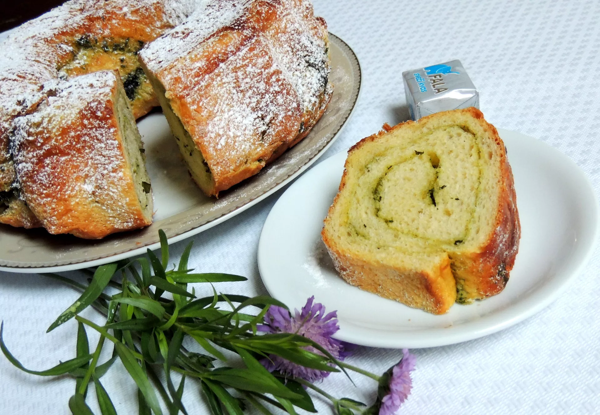

Potica
Home

Description
Potica is a traditional Slovenian pastry roll made of leavened dough with filling.
Fillings are be various; wallnuts, poppy seeds, tarragon, quark, apples or coconut.
Here, we present a recipe for tarragon filled potica.
Ingredients
Dough
- 700 g flour
- 250 mL milk
- 100 g sugar
- 50 g oil
- 2 tbsp rum
- 1 block fresh yeast
- 1 egg
- 1 pack vanilla sugar
- 1 pinch salt
Filling
- 500 g (low fat) quark
- 20 g tarragon
- 3 tbsp sugar
- 2 tbsp sour cream
- 1 egg
- 1 pack vanilla sugar
- 1 egg (for coating)
Steps
- Lets make the dough first. Mix flour and salt. Make a pit in the middle and crumble the yeast into.
- Heat the milk, add sugar and vanilla sugar, and stir until sugar dissolves completely.
- Pour the milk into the pit with yeast, stir and leave it to rise for 15 minutes.
- Add rum, egg and oil and knead into dough. Put the dough in a bowl, cover with kitchen towel and leave it to rise for another 40 minutes.
- While waiting for the dough to rise, prepare the filling. Mix quark and egg, then add tarragon, sugar and vanilla sugar.
- Now it is time to make the roll. Divide the dough into two halves, put it on the working surface, cover with kitchen towel and leave for another 15 minutes.
- Roll out one half of the dough 4-5 mm thick. Spread one half of the filling onto.
- Make a roll and put it into the aking tray. Repeat the procedure with the another half of the dough and filling.
- Take a knitting needle or similar accessory and pierce the rolls evenly multiple times.
- Scramble an egg and apply it on the rolls with a brush.
- Leave the rolls to rise for another 45 minutes.
- Bake on 200 degrees (Celsius) for 10 minutes, then lower the heat to 180 degrees and bake for another 50 minutes.
- When baked leave the rolls in the baking tray for 10 minutes, then take it out and wait to cool completely.
- Optionally, cover it with powdered sugar.